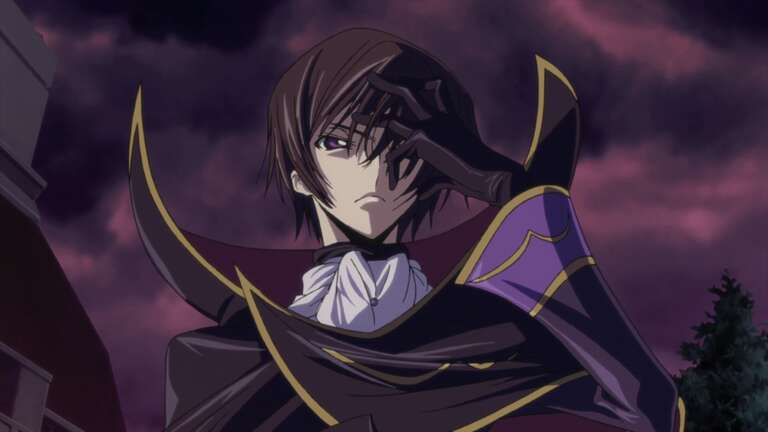

Introduction
TV shows are distinctly special to me. When I start a TV show, I don't just get in for some fun and then get out; I participate with the writers' custom world and the cast for a beautiful journey. Many ups and downs, but the good is not the "objective" but the trip. I usually watch already-finished TV shows only, with some exceptions for sitcoms/ not-focusing-on-the-story shows. Why? I was a Game of Thrones fan since season 5, watched episode by episode, week after week, and it turned out shit, Fuck you D&D and your fucking StarWars gig.
At the start of any TV Show, the writer, cast, director build up a fake world and set their own rules to it. What matters then is whether they will stand to their rules and make the best out of it. The perfect show isn't the realistic one, but it is the one that stands to the world it started with.
Shows here are not "the best of the best" but they're the ones that did change me a bit or with stories that did attach to me. Also, in the end, there is a special thanks for one writer. Besides, I tried to make the shows "various" so you will be more likely to see no similar genres.
Black Mirror

While This show opposes my thing of a "well-constructed story", it created the most interesting base for a futuristic world. But tbh, it was not too futuristic; it was just the present with a dark flavor that people refuse to notice. It stressed on some of the real-world issues as social media, racism, and privacy invasion. And with all of this wholesomeness, it still was well-written for almost all of the episodes. Black Mirror is a clean Masterpiece.
Code Geass

"How did the mediocre show land in this list?", they said. The answer to that question is simple, because of Lelouch. While watching the show, almost all of the ideas Lelouch had looked 'familiar'. Even the finale, which was too perfect (my all-time favourite ending for a show), was a weird idea I discussed with my brain a couple of episodes before thinking "Wow, it would have been awesome if .... happened, but it's impossible.", and I was wrong. It was a short-but-awesome trip with the show. Lelouch was a character I consider "similar" to me. maybe just a good writer but let's use imagination
Parks and Recreation
Choosing the sitcom was the hardest on this list. I am a big fan of sitcoms and watched MANY. However, parks and rec found its equilibrium between being a good show and still be funny as fuck. The show had its ups and downs, of course, but it was awesomely awesome on average.
P.S. The other sitcoms in the list on page's end are still as awesome as parks and rec, but I went with it after no thorough thinking
Narcos
Let's just say that Pablo Escobar's seasons of Narcos were just too perfect. I loved how the story flows. Maybe the true story was awesome, but all of the cast did well, and the show had no flaws.
You learn from this show that real life will always be more interesting.
El Arraf
While it's maybe a low-key Arabic series, it was very well-descriptive of the Egyptian political situation in a cool way.
Michael Schur
This guy co-created "The Office", "Parks and Recreation", "The Good Place", and "Brooklyn Nine-Nine". All of his shows are amazing, and he deserves his place on this list.
Others
All Shows/Anime I have downloaded to my Jellyfin Server are here. Down here are some other very good shows but they didn't make it to the top. The list below is not sorted.
| Fullmetal Alchemist | |
| Game of Thrones | Fuck you D&D. |
| Breaking Bad | First show I ever saw, maybe forgotten. |
| Friends | |
| Rick and Morty | |
| Hunter X Hunter | Fuck you, studio. |
| Westworld | Amazingly built-up. |
| Fleabag | I have major crush on Phoebe Waller-Bridge. |
| Hannibal | It may have topped if it's only 2 seasons. |
| Curb Your Enthusiasm | |
| Prison Break | Let's assume it was 1-season show. |
| The IT Crowd | |
| Silicon Valley | Cool. |
| Steins;Gate | Watched in wrong order, but it's time-travel :V |
| How I met your mother | |
| The Big Bang Theory | |
| And Then, There were none. | Best Very-Short series here. |